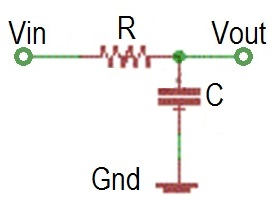
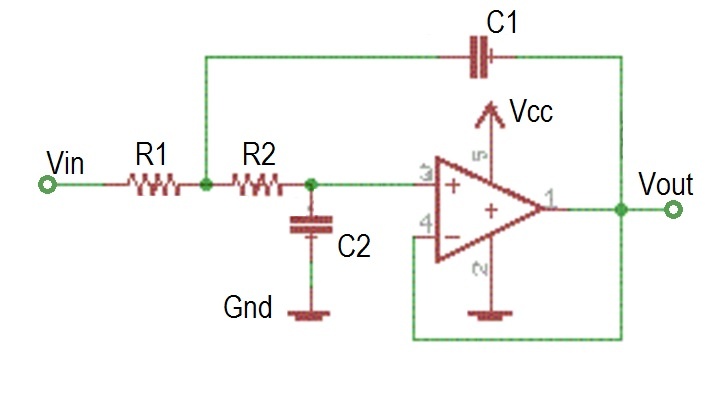

| Lecture: | 24 |
| Objective: | Design of a real LPF with standard components. |
Analog to Digital Conversion
Passive Low Pass Filter
A passive low pass filter can be built from a resistor and capacitor arranged in the configuration shown below.
This is a first order filter with the following characteristics.
- Corner frequency: fc = 1/(2*pi*R*C)
- DC Gain: 1
- Roll-off slope: -20dB/decade
Active Low Pass Filter
The main drawback of a passive filter is that it loads the signal source with its impedance. An active filter decreases this burden and in most cases produces better results. Designing an active low pass filter can be a little overwhelming as their are a variety of topologies (arrangements of electronics circuit elements), filter types (Butterworth, Chebyshev, and Bessel to name a few), and op-amps. A complete study of these alternatives would be a course in itself, so you will have to be satisfied with this brief overview.Probablly the most common active filter is shown below, a 2ond order Sallen-Key filter. Note that is has a pair RC elements, each serving the role of a single first order low-pass filter.

This filter does not have overwhelming performance, but makes up for that in its predictiable performance given in the following list.
- Corner frequency: fc = 1/(2*pi*SQRT(R1R2 C1 C2))
- DC Gain: 1
- Roll-off slope: -40dB/decade

The choice of op-amps is not terriably important for modest applications with signals of interest below 1MHz.
E-series resistors
International standard IEC 60063 defines the preferred values for resistors and capacitors in a decade. "In a decade" means values with the same power of ten when written in scientific notation. The number of distinct values in any decade if defines the number after the "E" with 6,12,24,... being the standard for electronics. The intervals between values in a decade are separated geometrically, meaning that to get the next value in the E-6 series you multiply by a value, not add to that values. The E-6 series divides a decade into 6 parts, so the multiplicative constant is 101/6 because after multiplying a value x by this constant 6 times you will get 10*x This is the next decade. A well equipped lab will have an E-6 series from 10Ω up to 10 MΩ Note each value in the E-12 column is a factor of 101/12 times larger than the preceeding value.| E-6 value | E-12 value |
| 10 | 10 |
| 12 | |
| 15 | 15 |
| 18 | |
| 22 | 22 |
| 27 | |
| 33 | 33 |
| 39 | |
| 47 | 47 |
| 56 | |
| 68 | 68 |
| 82 |
Problem:
Design a first order low pass filter with a corner frequency of 1000 Hz. Use only E-6 series components.
Solution:
fc = 1/(2*pi*RC) = 1000Hz R*C = 1.6*10^-4 = 160*10^-6Now we need to find an RC product close to 160. From the Test your understanding problem at the end of the lecture we have several choices
- 10*15 = 150
- 22*68 = 1496
- 33*47 = 1551
R*C = 160*10^-6 with R = 3.3kΩ yields C = 48nF
Test your understanding
You can find the solutions embedded in the "source code" for this web page by right mouse clicking on this web page and selecting "view source". The solutions are in HTML comments.- Create a table of the products of all the E6 values.
10 15 22 33 47 68 100 10 15 22 33 47 68 100